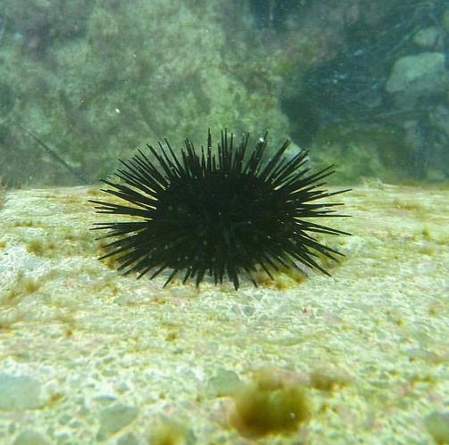
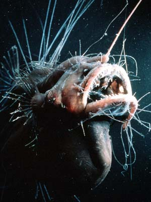

Intertidal Zone
<200m below sea level, very shallow
The Intertidal Zone is the first and most shallow benthic zone, close to the coast.
Organisms in this zone are are adapted to living in and out of the water.

Barnacles are crustaceans that attach themselves to surfaces (and then live there for the rest of their life.) They live near the top of the intertidal zone, and eat plankton that pass by during a tide.
Other organisms that live in the Intertidal Zone include:
- Clams
- Starfish
- Sea Anemone
Sublittoral Zone
up to 200m below sea level
Where the Intertidal Zone ends is where the Intertidal Zone starts.
This zone is quite consistent in temperature, pressure, and sunlight.
An example of a creature that lives in this zone is the sea urchin. They are omnivorous. 
Other organisms that live in the Sublittoral Zone include:
- Corals
- More Sea Anemones
Bathyal Zone
up to 4000m below sea level
From the edge of the Sublittoral Zone starts the Bathyal zone.
It’s a bit cold. (4°C/39°F)
Sunlight does not reach this zone much. As an effect, there aren’t many plants here.
 There are still organisms, however, such as the vampire squid. The vampire squid is small, red, and consume parts of decomposing organisms. It’s named the “vampire squid” due to the color of its body and eye. (It’s blue under certain lighting conditions.)
There are still organisms, however, such as the vampire squid. The vampire squid is small, red, and consume parts of decomposing organisms. It’s named the “vampire squid” due to the color of its body and eye. (It’s blue under certain lighting conditions.)
Other animals that live in the Bathyal Zone include:
- Jellyfish
- Eels
Abyssal Zone
up to 6000m below sea level
The largest zone in the ocean.
There are no plants here.
It’s very deep, and even colder. (almost freezing.)
Against all odds, there are organisms here!
For example, the crab, which gives me an excuse to link Crab Rave. That’s the only reason.
 Moving on to something more interesting, the Deep Sea Anglerfish. The glowing thing on their head is used as bait to get prey closer. Anglerfish are carnivorous.
Other organisms that live in the Sublittoral Zone include:
- Corals
- More Sea Anemones
Hadal Zone
the bottom of the bottom of the ocean
Found in ocean trenches, the Hadal Zone is the deepest benthic zone.
Very dark, very cold (barely over freezing,) and has extremely high pressure levels.
It’s difficult to study, but we do know a bit about it.
Animals in the Hadal Zone include:
- Sponges
- Clams
- Liparid Fish
It’s also worth noting that protists live here.